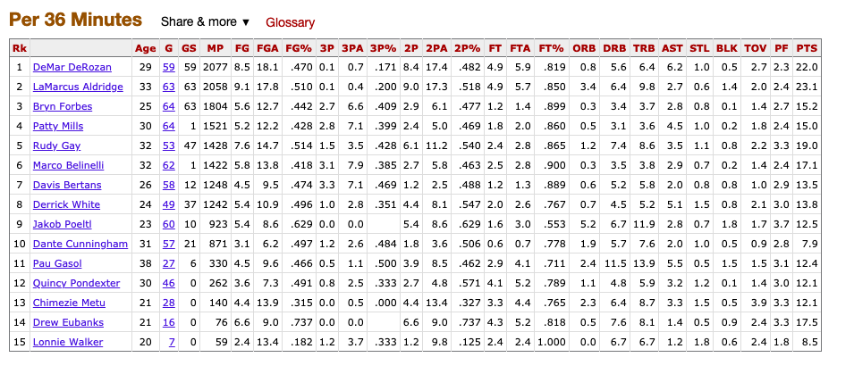
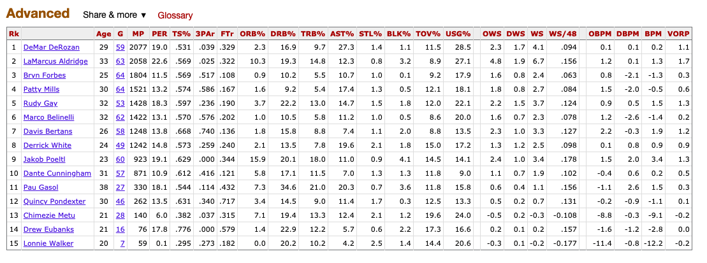
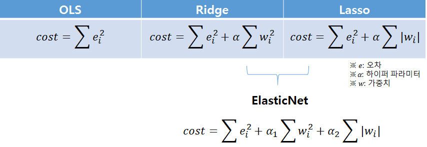
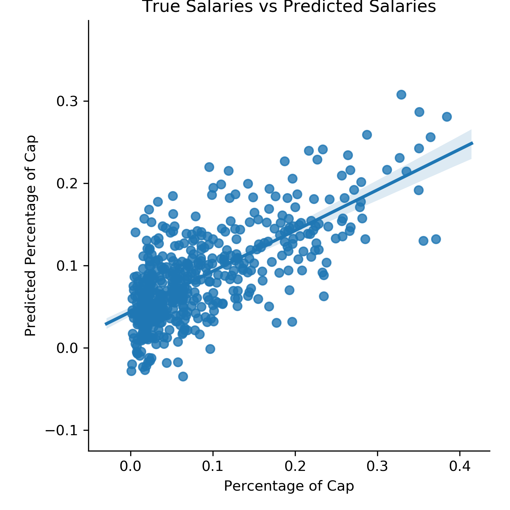

Valuing Basketball Players
Introduction
While I was growing up in San Antonio in the 2000’s, the one professional sports franchise in the area, the Spurs, were very good. We had the trio of Tim Duncan, Tony Parker, and Manu Ginobli, all legendary players in their own right. Between 1999 and 2014, this team brought home 5 championships and were one of the most dominant and consistent teams in American sports. The general discussion of the Spurs’ recent performance was inescapable, especially if it was a year they made it deep into the playoffs. Growing up in this environment, I developed a passing curiosity with basketball and the NBA, but not a deep fandom. So, when I found a large source of easily collectible basketball statistics, and knowing success about previous success in sports analytics, I decided to investigate the data.
My objective was to determine whether a player had performed in manner consistent with their salary. Players are expensive, and accurate appraisal of talent is important in building a strong team. In other words, I wanted to find out which players gave the most bang for your buck.
The plan was to build a model to predict the salaries of basketball players given their performance that year. The difference between my model’s prediction of the salary and their actual salary would be the amount by which they were being overpaid or underpaid. If somebody is being underpaid with regards to their stats, then
Data Collection
The first step in answering this question was to find the right data. I found this in basketball-reference.com, a wonderfully extensive resource containing anything basketball related that can be quantified. I performed web scraping using Beautiful Soup to collect all data for all teams (including all players) from 2008 to 2018, including salary information and salary cap information (more on why that’s important later).
Though I scraped as much info as I could from the the website, I only utilized a small selection. I focused on the per 36 minutes played statistics table and the Advanced Statistics table. (maybe include image here) An example of the per 36 minute statistics is Field Goals per 36 Minutes.


An example of an advanced statistic is PER or Player Efficiency Rating, which is calculated from a truly monstrous equation. I used the per 36 minute equations because I wanted to normalize the statistics for time on the court. One potential downside of this is that it may overvalue old players who can’t play for long periods of time, but are highly effective when on the court. I also wanted to use the advanced statistics because they represented some pre-engineered features of such high quality that I it would be foolish for me to not take advantage of them.
Regularization
One drawback of Ordinary Least Squares is that it can be prone to overfitting, especially when fitting on engineered features and polynomial features. LASSO and Ridge regression are two variants of OLS which are widely used in order to mitigate the problem of overfitting. Since I was working with a lot of features (over 50 in fact), I decided to use LASSO to cut out some of my extraneous feature. Utilizing LASSO (in combination with sklearn’s GridSearchCV to select the appropriate regulzariztion parameter), I was able to cut myself down to 14 featuress.
The LASSO cost function tends to zero out a few parameters whereas Ridge tends to be more egalitarian in contraining parameter values. I chose to use LASSO over Ridge because my data exhibited a high degree of multicolinearity. In other words, a lot of my features were telling me the same thing. And since more features means more opportunity to fit to noise, cutting out redundant features will help my model generalize better.

Results
Now that I had a model predicted that how much a player was overpaid or underpaid, I identified the most overpaid and underpaid players for every year from 2011 to 2018. I have a detailed these results below:
Underpaid Players
| Name | Team | Year | Salary | Predicted Salary | Predicted Salary Error |
|---|---|---|---|---|---|
| Shaquille O’Neal | BOS | 2011 | $1,352,000 | $9,554,000 | $8,202,000 |
| Tracy McGrady | ATL | 2012 | $1,352,000 | $8,405,000 | $7,053,000 |
| Tim Duncan | SAS | 2013 | $9,638,000 | $17,077,000 | $7,438,000 |
| DeMarcus Cousins | SAC | 2014 | $4,917,000 | $12,956,000 | $8,039,000 |
| Pau Gasol | CHI | 2015 | $7,128,000 | $16,611,000 | $9,483,000 |
| Pau Gasol | CHI | 2016 | $7,449,000 | $19,362,000 | $11,913,000 |
| Giannis Antetokounmpo | MIL | 2017 | $2,995,000 | $20,495,000 | $17,500,000 |
| Dwyane Wade | MIA | 2018 | $1,471,000 | $17,827,000 | $16,356,000 |
Overpaid Players
| Name | Team | Year | Salary | Predicted Salary | Predicted Salary Error |
|---|---|---|---|---|---|
| Rashard Lewis | WAS | 2011 | $19,574,000 | $5,578,000 | -$13,996,000 |
| Rashard Lewis | WAS | 2012 | $21,137,000 | $5,537,000 | -$15,600,000 |
| Amar’e Stoudemire | NYK | 2013 | $19,949,000 | $6,814,000 | -$13,135,000 |
| Amar’e Stoudemire | NYK | 2014 | $21,680,000 | $6,537,000 | -$15,143,000 |
| Amar’e Stoudemire | NYK | 2015 | $23,411,000 | $8,337,000 | -$15,074,000 |
| Joe Johnson | BRK | 2016 | $24,894,900 | $9,114,000 | -$15,781,000 |
| Chandler Parsons | MEM | 2017 | $22,117,000 | $5,922,000 | -$16,195,000 |
| Mike Conley | MEM | 2018 | $28,530,000 | $11,148,000 | -$17,383,000 |
So, there you have it, the most underpaid and overpaid players between 2011 and 2018 in the NBA. I have similar information for every player in my dataset, but these were just the largest outliers and the most interesting examples.
While I do think these results are pretty decent, I want to stress some limitations of this model. First, I want to take a look at this residual plot.

A few notes:
- I’m predicting a few negative values. This may be worrisome, or it could be interpretted as players who are so bad that you should be willing to give up money in order to get them off your time. For instance, if there is a cost involved in a breaking a contract early, it still may be worth it to get them off your team.
- We’d ideally wish to have the slope of this line be about 1, but here it looks like it’s a little over . This means that our model tends to underpredicct the salary of players. For instance, some players command a full 40% of the salary cap, but my model doesn’t predict anything above about 30% of the cap.
So, that’s all I have for this project. I’ll link to the code soon and possibly update this with further thoughts on this project. I may try to extend this out to more years if I think it’s worthwhile. Thanks for reading!